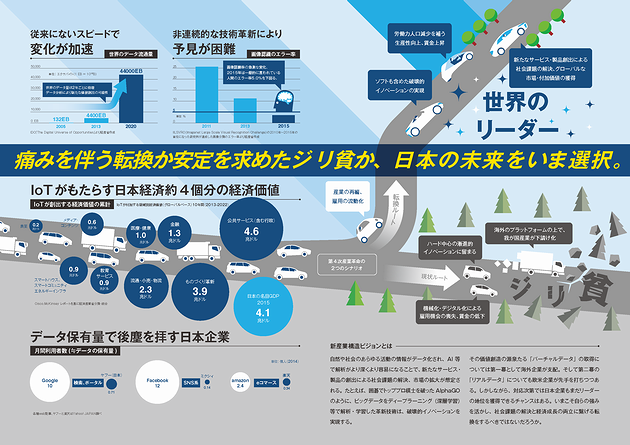

-
- 1．背景
- 「第4次産業革命」とも呼ぶべきIoT、ビッグデータ、ロボット、人工知能（AI）等による技術革新は、従来にないスピードとインパクトで進行しています。この技術革新を的確に捉え、これをリードするべく大胆に経済社会システムを変革することこそが、我が国が新たな成長フェーズに移行するための鍵となります。
- 産業構造審議会 新産業構造部会では、昨年8月より「新産業構造ビジョン」の策定に向けた議論を重ね、今般、中間整理を行いました。
- 
- 2．中間整理のポイント
- 1．第4次産業革命のインパクト
- 2．我が国の基本戦略
- 3．第4次産業革命による社会の変革と産業構造の転換
- 4．第4次産業革命による就業構造転換
- 5．産業構造・就業構造の試算
- 6．我が国の具体的戦略
- ①データ利活用促進に向けた環境整備
- • データプラットフォームの構築、データ流通市場の創成
- • 個人データの利活用の促進
- • セキュリティ技術開発や人材育成等の強化
- • 第4次産業革命における知的財産政策の在り方
- • 第4次産業革命に対応した競争政策の在り方
- ②人材育成・獲得、雇用システムの柔軟性向上
- • 新たなニーズに対応した教育システムの構築
- • グローバルな人材獲得
- • 多様な労働参画の促進
- • 労働市場・雇用制度の柔軟性向上
- ③イノベーション・技術開発の加速化（「Society5.0」）
- • オープンイノベーションシステムの構築
- • 世界をリードするイノベーション拠点の整備・国家プロジェクト構築・社会実装の加速（人工知能等）
- • 知財マネジメントや国際標準化の戦略的推進
- ④ファイナンス機能の強化
- • リスクマネー供給に向けたエクイティファインナンスの強化
- • 第4次産業革命に向けた無形資産投資の活性化
- • FinTechを核とした金融・決済機能の高度化
- ⑤産業構造・就業構造転換の円滑化
- • 迅速・果断な意思決定を可能とするガバナンス体制の構築
- • 迅速かつ柔軟な事業再生・事業再編等を可能とする制度・環境整備
- ⑥第4次産業革命の中小企業、地域経済への波及
- • 中小企業、地域におけるIoT等導入・利活用基盤の構築
- ⑦第4次産業革命に向けた経済社会システムの高度化
- • 第4次産業革命に対応した規制改革の在り方
- • データを活用した行政サービスの向上
- • 戦略的な連携等を通じたグローバル展開の強化
- • 第４次産業革命の社会への浸透